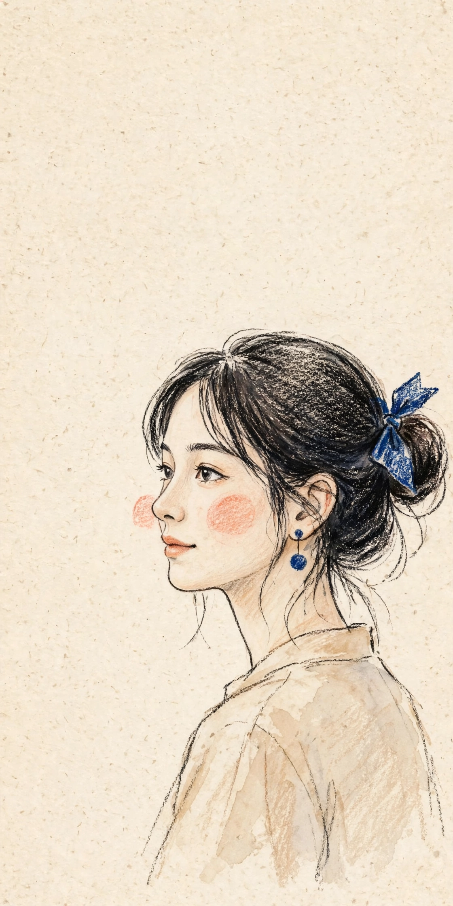
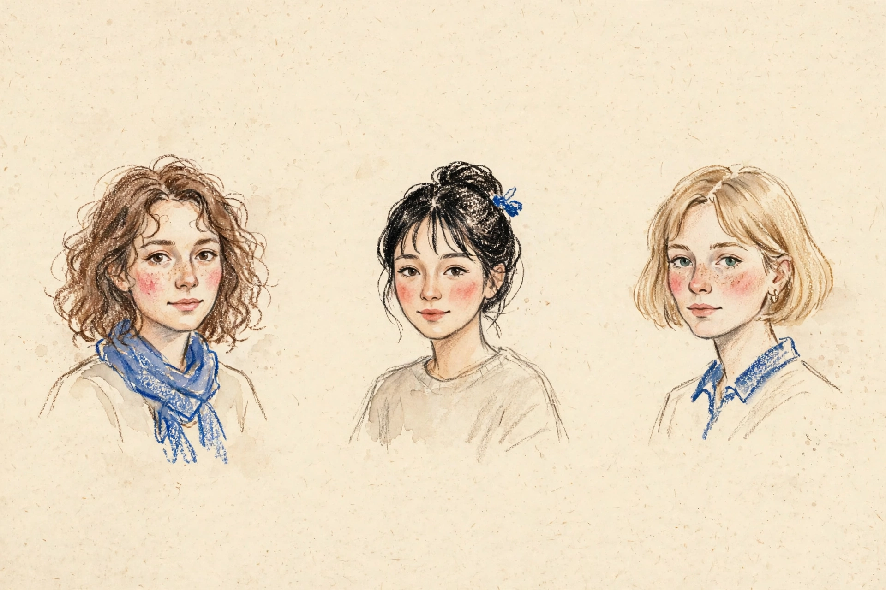
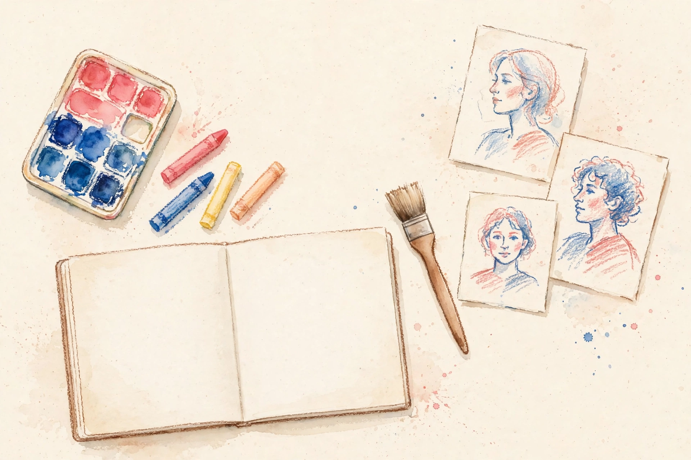

01
손그림 인물 일러스트 포트폴리오
STRUCTURE · 구조① 요청
손그림 인물 일러스트 포트폴리오. 브랜드·출판·포스터 작업 중심.
② 정리 · 해석
작업물이 주인공이어야 합니다. 설명보다 그림이 먼저 보이고, 갤러리가 가장 커야 합니다.
③ 디자인 반영
히어로 첫 화면에 대표 일러스트를 크게 배치하고, 갤러리 섹션을 페이지 전체의 중심에 둡니다. 소개 글은 짧게 줄이고, 그림에 자리를 양보합니다.
MAKING-OF GUIDE · 제작 과정 안내
주문서 한 장이 샘플이 됩니다. 주문자가 적어 보낸 요구사항을 getsite.my가 읽고, 디자인으로 바꿉니다.
이 페이지는 예시 주문 ‘다올 그림 스튜디오’가 샘플이 되기까지의 과정을 순서대로 보여줍니다. 원하시는 디자인의 방향성은 요구사항과 레퍼런스를 통해 제시해 주세요!
주문서를 쓰기 전에 읽어 보고, 요구사항을 어떻게 적으면 좋은지 참고합니다.
주문부터 샘플 완성까지의 과정을 항목별로 정리해서 보여줍니다.

출발점은 주문서 몇 줄입니다. 거창한 기획서 없이 시작합니다. 주문자가 사이트명, 목적, 섹션 순서, 참고 자료와 메모를 적어 보내면 getsite.my가 그대로 정리합니다. 주문서를 정확히 읽는 게 샘플의 출발점이라서, 없는 내용은 임의로 채우지 않고 비워 둡니다. 아래는 다올 그림 스튜디오 주문을 정리한 내용입니다. 다른 주문도 같은 방식으로 정리합니다.
사이트명, 목적, 섹션 순서, 참고 자료와 메모를 적어 보냅니다.
주문서를 그대로 정리합니다. 주문서에 적지 않은 내용은 임의로 채우지 않고 비워 둡니다.
주문서에 없는 내용은 임의로 채우지 않습니다. 비워 둔 항목은 샘플에 자리만 마련해 두고, 고객 확인 단계에서 채웁니다. 비워 둔 항목은 04에서 그대로 알려드립니다.
참고 슬라이드는 원본 파일 그대로 보내고, 원하는 느낌은 메모 한 줄로 덧붙입니다.
주문자의 요청 다섯 가지는 요청, 정리·해석, 디자인 반영의 세 단계로 풀어서 반영합니다. 샘플을 받으면 아래 표와 대조해서 확인할 수 있습니다.
샘플을 받으면 아래 표와 대조해서 요청이 맞게 반영됐는지 확인합니다.
요청 5가지를 요청, 정리·해석, 디자인 반영의 세 단계로 풀어서 디자인에 적용합니다.
손그림 인물 일러스트 포트폴리오. 브랜드·출판·포스터 작업 중심.
작업물이 주인공이어야 합니다. 설명보다 그림이 먼저 보이고, 갤러리가 가장 커야 합니다.
히어로 첫 화면에 대표 일러스트를 크게 배치하고, 갤러리 섹션을 페이지 전체의 중심에 둡니다. 소개 글은 짧게 줄이고, 그림에 자리를 양보합니다.
작업을 본 사람이 바로 의뢰 문의를 남길 수 있게.
문의로 가는 길을 짧게 만드는 게 핵심입니다. 작품을 보고 마음이 생긴 그 순간에 바로 문의로 이어져야 합니다.
갤러리 각 작품과 페이지 하단에 문의 버튼을 배치하고, 마지막 연락처 섹션에 문의 폼을 넣습니다. 작품을 보고 마음이 생긴 순간에 바로 문의할 수 있습니다.
크림 바탕, 수채·크레용 질감 인물, 코럴 볼터치, 코발트 블루 포인트, 굵은 영문 대문자 제목과 세로 문구, 넉넉한 여백.
레퍼런스의 분위기를 색·서체·여백 규칙으로 번역합니다. 느낌은 가져오고, 그림 자체는 가져오지 않습니다.
크림 배경, 코럴·코발트 포인트 컬러, 굵은 영문 대문자 타이틀, 세로 문구, 넓은 여백의 레이아웃으로 네 섹션 전체에 같은 규칙을 적용합니다. 자세한 색·서체·여백 규칙은 아래 03에서 보여줍니다.
작업을 큰 이미지로 넘겨 보는 프로젝트 페이지 구성.
작품을 크게 보는 게 포트폴리오의 설득력입니다. 작은 썸네일만 나열하면 손그림의 질감이 전달되지 않습니다.
갤러리에서 작품을 클릭하면 큰 이미지로 보는 상세 보기가 열립니다. 질감과 볼터치 같은 디테일이 큰 화면에서 확인됩니다.
섹션 4개 — 히어로 / 소개 / 갤러리 / 연락처.
주문 그대로가 기준입니다. 섹션을 임의로 보태거나 빼면 주문과 샘플이 어긋납니다.
섹션 순서와 구성을 주문 그대로 구현합니다. 히어로, 소개, 갤러리, 연락처. 네 섹션 외의 군더더기는 넣지 않습니다.
보내주신 참고 슬라이드에서 “이런 느낌으로”라는 방향을 읽어 규칙으로 바꿉니다. 그림 자체는 새로 그립니다. 다올 사례에서 읽은 방향은 일곱 가지입니다.
“이런 느낌이 좋다”는 방향으로 참고 슬라이드나 이미지를 보냅니다.
참고 자료에서 색·질감·서체·여백 같은 방향만 읽어 규칙으로 바꿉니다. 참고 슬라이드의 로고·문구·그림은 그대로 복사하지 않고, 같은 화풍의 오리지널 일러스트 4장을 새로 그려 샘플에 넣습니다.
화풍 스터디는 그리는 방식입니다. 아래 일곱 가지가 색·서체·여백 규칙입니다.

번지는 수채 위에 거친 크레용 결. 매끈한 디지털 질감과 정반대 방향입니다.
TEXTURE · WATERCOLOR + CRAYON제목은 설명이 아니라 포스터처럼. 굵고 크게, 대문자로.
TYPE · BOLD UPPERCASE가로 흐름 옆에 세로로 세운 짧은 문구가 리듬을 만듭니다.
TYPE · VERTICAL TEXT요소를 채우는 대신 비워서 그림 하나하나가 숨 쉴 간격을 만듭니다. 여백도 디자인의 일부로 계산합니다.
SPACE · GENEROUS WHITESPACE참고 이미지는 방향을 정하는 재료이지,
가져다 쓰는 재료가 아닙니다.
다올 샘플을 만들 때 참고 슬라이드의 로고·문구·그림은 단 하나도 그대로 복사하지 않았습니다. 슬라이드에서 가져온 것은 색, 질감, 타이포, 여백 같은 방향뿐입니다.
대신 같은 화풍의 오리지널 일러스트 4장을 새로 그려 샘플에 넣었습니다. 참고 자료의 그림을 그대로 쓰면 그 그림을 그린 사람의 권리를 침해합니다. 그 그림은 주문자 본인의 작업물도 아닙니다.
보낼 때는 “이 그림을 써 달라”가 아니라 “이런 느낌이 좋다”로 보냅니다. 느낌은 정확히 읽어내고, 그림은 새로 만듭니다. 그게 이 제작 방식의 원칙입니다.

좋아하는 부분은 “전체 분위기”가 아니라 색·질감·타이포·여백 중 어느 부분인지 짚어서 보냅니다.
샘플은 완성됐습니다. 비어 있는 자리가 네 곳 있습니다. 받지 못한 정보를 임의로 지어내지 않았습니다. 어떤 자리인지, 왜 비었는지, 무엇이 오면 채워지는지 그대로 알려드립니다.
비어 있는 네 자리 중 보낼 수 있는 자료가 있으면 샘플 확인 단계에서 알려줍니다.
받지 못한 정보는 지어내지 않고, 무엇이 오면 채워지는지 이유와 함께 알려드립니다. SNS 계정 정보가 없으면 링크 자리를 비워 두고, 그 자리는 최종본에서 빼고 만듭니다.
접수 시점에 작가의 실제 작품 파일이 오지 않았습니다. 갤러리와 히어로에는 실제 작품 대신 같은 화풍으로 새로 그린 오리지널 일러스트 4장이 들어갔습니다. 분위기를 확인하는 샘플 용도로는 충분합니다. 최종 사이트의 그림은 작가 본인의 작품이어야 합니다.
실제 작품 파일이 오면 전량 교체합니다. 샘플용으로 그린 그림은 최종 사이트나 다른 곳에 재사용하지 않습니다.
인스타그램 등 실제 SNS 계정 정보가 주문에 없어서 링크 자리를 비워 두었습니다. 있을 법한 주소를 지어내 넣으면 방문자가 엉뚱한 계정으로 갑니다. 모르는 링크는 만들지 않습니다.
계정 주소를 알려주면 바로 연결합니다. 없으면 그 자리는 최종본에서 빼고 만듭니다.
작업 단가, 경력 연차, 지금까지 받은 의뢰 건수 같은 수치는 주문자가 준 것이 없어서 넣지 않았습니다. 포트폴리오에 흔히 보이는 “작업 120건” 같은 숫자를 임의로 적으면 지어낸 경력이 됩니다.
가격표나 경력·실적 수치처럼 공개할 수치가 있으면 주신 그대로 넣고, 없으면 수치 없이 작품만으로 구성합니다.
작가 소개 문구의 최종 문장, 연락처로 표기할 정보의 범위, 문의 폼으로 받을 항목처럼 주문자가 정해야 하는 내용은 자리만 마련하고 비워 두었습니다. 샘플 단계에서 대신 써 버리면 수정이 번거로워집니다.
샘플 확인 단계에서 항목별로 묻고, 답변대로 최종 제작에 반영합니다.
실제 작품 파일이 준비되면 보냅니다. 파일이 오면 갤러리와 히어로의 샘플 일러스트를 전량 교체합니다.
비어 있는 항목은 샘플 확인 단계에서 항목별로 묻고, 답변대로 최종 제작에 반영합니다.
전체 과정은 7단계입니다. 샘플이 완성되면 「샘플 제작 완료 메일」로 링크를 받고, 확인·수정을 거쳐 최종 제작으로 넘어갑니다. 단계별 메일과 하실 일은 주문 진행 안내에 자세히 있습니다.
이메일로 받은 샘플 링크를 확인하고, 수정할 부분과 채울 항목을 알려줍니다.
샘플 확인과 수정 단계를 함께 진행합니다. 샘플만 받는 단계에서는 결제가 없습니다.
주문서와 참고 자료를 받습니다.
접수 내용을 정리한 안내 메일을 받습니다.
요청을 정리·해석해서 디자인 방향으로 번역합니다. 요구사항 분석이 이 단계의 일입니다.
이 페이지 01~04장의 과정 그대로 제작합니다.
샘플 링크와 요청 항목별 반영 설명이 담긴 메일을 받습니다.
비어 있는 항목을 채우고 방향을 다듬습니다.
실제 자료로 완성하고 인계까지 진행합니다.
샘플만 받는 것은 결제하지 않습니다. 작업을 진행하기 전에는 비용이 없습니다. 샘플을 보고 최종 제작을 진행하기로 하시면 착수금 50% 입금 후 제작을 시작하고, 완성본을 확인하신 뒤 잔금 50%가 확인되면 배포·인계합니다. 금액은 VAT 별도이며, 입금 계좌는 확정 후 안내해 드립니다.
샘플을 받으면 02장의 요청 반영 여부와 04장의 비어 있는 자리를 항목별로 대조해서 확인합니다.
수정은 “어느 섹션·어느 작품·무엇을 어떻게”인지 항목별로 알려줍니다.
다올 사례에서 비어 있던 네 자리는 뒤집으면 “미리 준비하면 좋은 것” 목록이 됩니다. 전부 갖춰야 주문할 수 있는 건 아닙니다. 있는 것부터 보내면 됩니다. 참고 링크와 이미지는 주문할 때 바로 붙이고, 사이트에 쓸 사진·자료는 접수 뒤 받는 전용 Drive 폴더에 올립니다.
대표 작업 이미지, 레퍼런스, SNS·연락 채널 주소, 공개할 가격·소개 방향 중 있는 것부터 보냅니다.
보내준 자료를 기준으로 샘플을 더 정확하게 만듭니다. 없는 항목은 샘플 단계에서 함께 정합니다.
실제 작품을 보내면 샘플 첫 화면부터 주문자의 작업으로 채웁니다. 없으면 화풍에 맞는 오리지널 그림으로 샘플을 만들고, 나중에 교체합니다.
좋아하는 사이트나 슬라이드, 이미지 무엇이든 좋습니다. 그대로 베끼는 자료가 아니라 방향을 읽는 자료로 씁니다.
인스타그램, 블로그, 이메일 등 실제로 연결할 주소만 알려줍니다. 없는 채널은 만들지 않습니다.
가격표를 공개할지, 소개 글에서 강조할 경력이 무엇인지 정합니다. 정하지 않았으면 샘플을 보면서 함께 정합니다.
문의로 받고 싶은 의뢰 종류를 정합니다. 브랜드·출판·포스터 중 어느 작업을 중심으로 문의받고 싶은지 정합니다.
섹션 4개의 순서(히어로, 소개, 갤러리, 연락처)를 주문 그대로 둘지 확인합니다.
문의 폼으로 받고 싶은 항목을 미리 정합니다. 샘플 확인 단계에서 항목별로 묻고, 답변대로 최종 제작에 반영합니다.
샘플을 확인할 때 볼 포인트를 미리 정합니다. 갤러리가 중심인지, 작품에서 문의까지의 동선인지, 큰 이미지로 보는 상세 보기인지 정합니다.